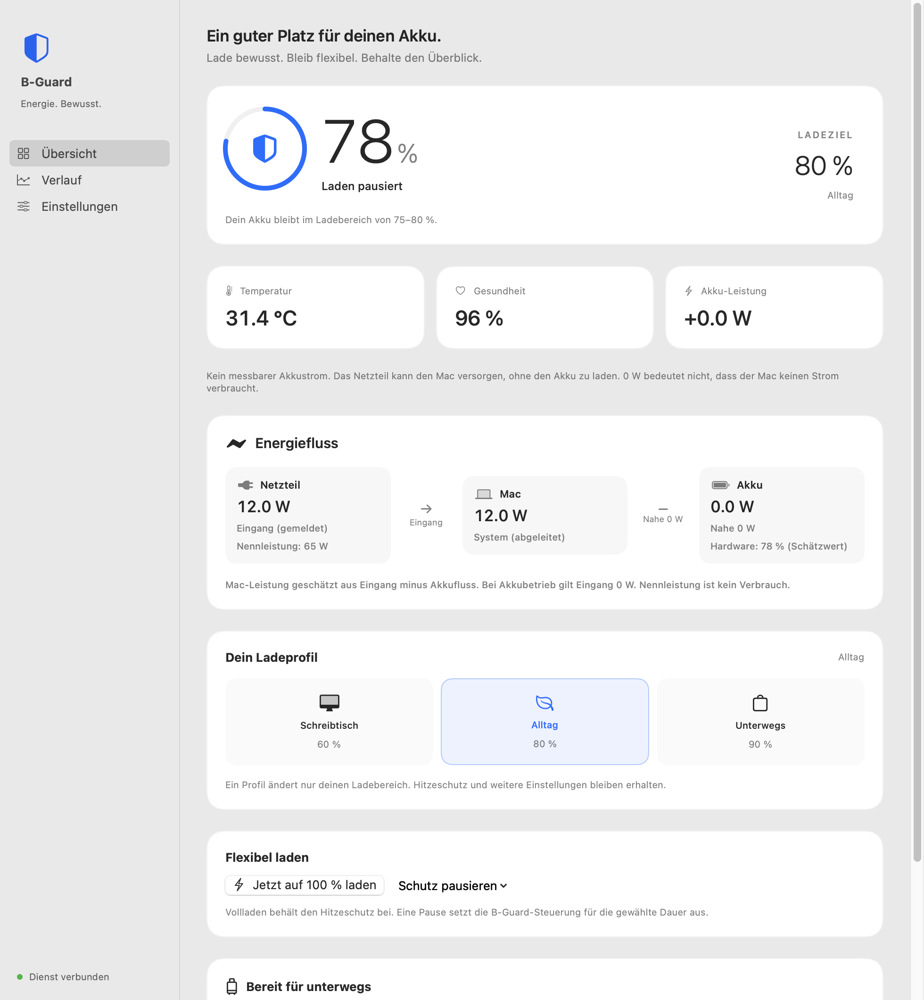
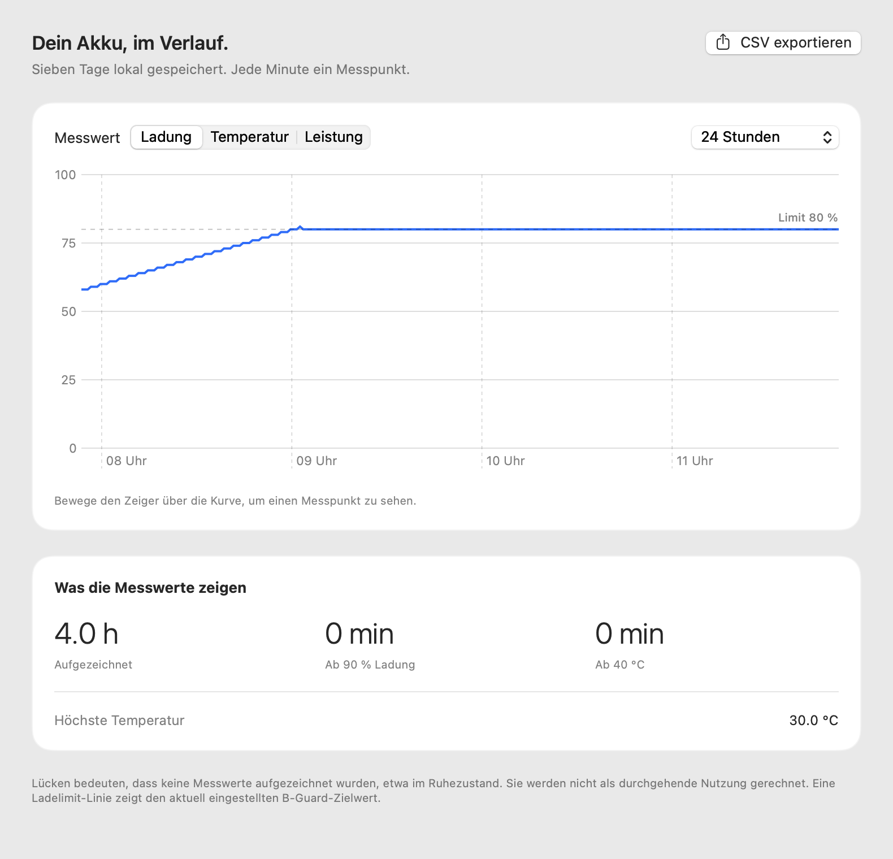
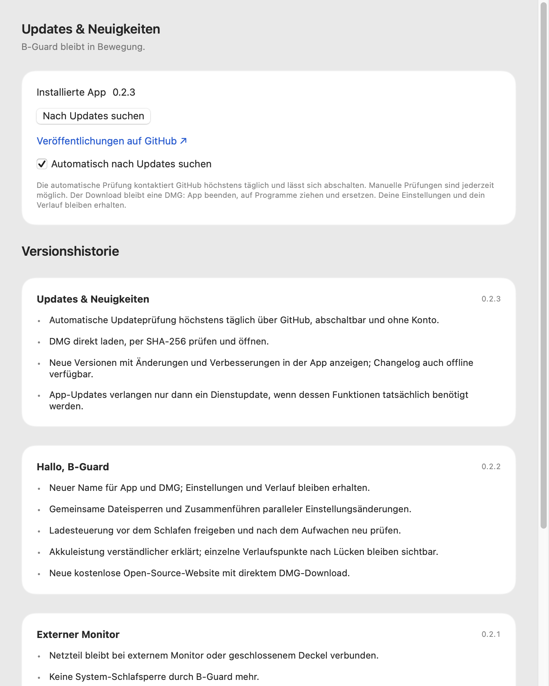

LADEPROFILE
Ein Klick.
Ein anderer Tag.
Drei Profile für drei Situationen. Wechsle direkt in der Menüleiste oder passe Minimum und Maximum an deinen Alltag an.
Profilvorschau. Die verfügbaren Eingriffe hängen von der Hardware ab.
FÜR DEINEN MAC. FÜR DEINEN ALLTAG.
Am Schreibtisch. Auf dem Sprung. Unterwegs.
B-Guard macht deinen Ladeplan so flexibel wie deinen Tag.
Kostenlos · Open Source · Apple Silicon · macOS 14+

Echte App-Oberfläche. Vorschau mit Beispieldaten.
MEHR ALS EIN LADELIMIT
LADEPROFILE
Drei Profile für drei Situationen. Wechsle direkt in der Menüleiste oder passe Minimum und Maximum an deinen Alltag an.
Profilvorschau. Die verfügbaren Eingriffe hängen von der Hardware ab.
REISEPLANUNG
Termin wählen. B-Guard beginnt drei Stunden vorher mit dem Vollladen und kehrt nach 100 % oder spätestens eine Stunde nach dem Termin zu deinem Ladebereich zurück.
Der Mac muss wach und am Netzteil sein. Ein voller Akku zum Termin ist nicht garantiert.
LOKALER VERLAUF
Ladung, Temperatur und Leistung über bis zu sieben Tage. Sieh beobachtete Zeiten bei hoher Ladung oder Temperatur und exportiere deine Messwerte als CSV.

GEPLANTE AUSNAHMEN
Einmal voll laden oder den Schutz für eine, zwei oder zwölf Stunden pausieren. Danach gelten automatisch wieder deine gespeicherten Einstellungen.
TEMPERATUR IM BLICK
Konfigurierbarer Hitzeschutz und getrennte Mitteilungen für Temperatur, niedrigen Akkustand und erreichtes Limit. Du entscheidest, was dich informiert.
Während einer Schutzpause greift auch der Hitzeschutz nicht ein. Eingriffe sind hardwareabhängig.
DEINE MENÜLEISTE
Ladering, Batterie oder Schild wählen und Prozent, Akkutemperatur oder Akku-Leistung direkt oben anzeigen. Im Menüfenster schaltest du Temperatur, Leistung, Gesundheit und Energiefluss nach Wunsch dazu. Deine Akkuwarnung hat eine eigene Schwelle — unabhängig vom Ladeprofil.
ENERGIEFLUSS
Gemeldeten Netzteileingang, geschätzte Mac-Leistung und Akku-Ladefluss getrennt sehen. So bleibt auch ein Akku mit 0 W verständlich, während der Mac vom Netzteil versorgt wird.
Hardwareabhängige Messwerte. Netzteil-Nennleistung ist kein Verbrauch; die Mac-Leistung ist eine Schätzung.
LOKALE REST API
Lies Status, Einstellungen und Verlauf als JSON oder CSV aus. Aktiviere auf Wunsch Steuerbefehle für Profile und Zeitpläne. Nur auf deinem Mac, mit API-Token und bei laufender App.
Standardmäßig ausgeschaltet. Dokumentation und Beispiele ↗
UPDATES & NEUIGKEITEN
B-Guard prüft höchstens täglich auf neue Versionen. Du siehst die Änderungen und Verbesserungen direkt in der App. Der Download beginnt erst nach deinem Klick, zeigt den Fortschritt und lässt sich abbrechen. Vor dem Öffnen wird er per SHA-256 geprüft.
Automatische Prüfungen kontaktieren GitHub und lassen sich abschalten. Die Versionshistorie ist auch offline verfügbar.

DEIN MAC BLEIBT DEIN MAC
Deine Akkuwerte bleiben lokal. Keine Telemetrie in der App.
Kein Abo. Keine versteckten Freischaltungen. MIT-Lizenz.
EINE SINNVOLLE ERGÄNZUNG
Apples optimiertes Laden und natives Ladelimit sind eine gute Grundlage. B-Guard ergänzt bewusst gewählte Profile, Zeitpläne und Messdaten — mit klaren Grenzen.
| Dein Wunsch | macOS-Bordmittel | Mit B-Guard |
|---|---|---|
| Ein Ladelimit setzen | Nativ 80–100 % auf unterstützten Macs¹ | Eigene Bereiche und drei schnell wechselbare Profile² |
| Sofort voll laden | Bereits vorhanden¹ | Mit zeitlich begrenzter Ausnahme und konfiguriertem Hitzeschutz² |
| Für einen Termin planen | Optimiertes Laden lernt deine Routine¹ | Einen konkreten Reisetermin selbst festlegen |
| Schutz kurz pausieren | Einstellungen manuell ändern | 1, 2 oder 12 Stunden, automatisch zurück zum Profil |
| Messwerte selbst auswerten | Batterieinformationen und Nutzungsansichten | Temperatur- und Leistungskurven, sieben Tage Messwerte, CSV-Export |
| Nur beobachten | macOS steuert die Ladung | Nativer Modus mit zusätzlichem Messverlauf und Hinweisen |
¹ Apple: Optimiertes Laden und Ladelimit. Das native Ladelimit erfordert Apple Silicon und macOS 26.4 oder neuer. ² B-Guard verwendet hardwareabhängige SMC-Steuerung. Mit externem Monitor bleibt das Netzteil verbunden; ohne separate Ladesperre übernimmt dort macOS. Ein zusätzliches natives Limit kann höhere Ziele verhindern.
IN WENIGEN SCHRITTEN
Kein Terminal. Kein Paketmanager. Nur dein Mac.
B-Guard kostenlos laden ↓Version 0.3.2 · Apple Silicon · macOS 14+
Lade die aktuelle Version direkt von GitHub.
B-Guard anschließend aus dem Programme-Ordner öffnen.
Der macOS-Administratordialog richtet den Hintergrunddienst ein.
Die App unterstützt Apple Silicon ab macOS 14. Welche Ladeeingriffe funktionieren, hängt von Modell, macOS-Version und verfügbaren SMC-Schlüsseln ab. Nicht unterstützte Steuerung zeigt die App an. Intel-Macs sind für diesen Download nicht vorgesehen.
Ja, B-Guard hält bei erkanntem externem Monitor die Netzversorgung verbunden und erzeugt keine Schlafsperre. Die normalen macOS-Voraussetzungen gelten. Ohne separate Ladesperre übernimmt macOS das Limit; das Schreibtischprofil kann dort seine 60 % nicht erzwingen.
Die Community-Version ist ad-hoc signiert, aber noch nicht notarisiert. Wenn du der Quelle vertraust, kannst du sie nach dem Öffnungsversuch unter Systemeinstellungen → Datenschutz & Sicherheit → Dennoch öffnen freigeben. Apples Anleitung. Für den Hintergrunddienst ist einmalig ein Administratorpasswort erforderlich.
Nein. Temperatur, Ladeverhalten und viele weitere Faktoren beeinflussen die Alterung. B-Guard gibt dir Kontrolle und Messdaten, keine Lebensdauer-Garantie. Auf Hardware mit Pendelsteuerung entstehen zusätzliche Lade- und Entladebewegungen.
Akkuwerte und Verlauf bleiben auf deinem Mac. Für die automatische Updateprüfung wird GitHub höchstens täglich kontaktiert; du kannst sie in den Einstellungen abschalten. Manuelle Prüfungen und angeforderte Downloads kontaktieren ebenfalls GitHub. Es gibt kein Konto und keine Telemetrie.
Der Hintergrunddienst führt deine Einstellungen und Zeitpläne weiter aus. Die Verlaufsaufzeichnung und die optionale REST API enden mit der App. Sie erfasst bei laufender App ungefähr einen Messpunkt pro Minute; Schlaf- und Ausfallzeiten bleiben Lücken. Vor dem Systemschlaf gibt der Dienst die Ladesteuerung frei.
Kostenlos. Heute und im offenen Quellcode.